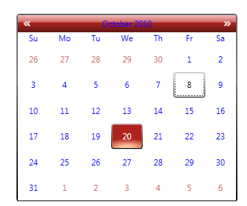

All Syncfusion styles can be overridden by a common Naming Convention. A unique key is given to each and every style, so that you can override the styles using the BasedOn property.
Naming Convention of a key
VisualStyle-ControlName-Style
Example: ShinyRedCalendarEditStyle
The following steps explain how to override the Syncfusion Themes.
1. Add the corresponding resource dictionary in the sample.
|
[XAML] <ResourceDictionary> <ResourceDictionary.MergedDictionaries> <ResourceDictionary Source="/Syncfusion.Shared.WPF;Component/Controls/Calendar/themes/ShinyRedStyle.xaml"/> </ResourceDictionary.MergedDictionaries> </ResourceDictionary>
|
2. Define the new style using the BasedOn property.
The following code snippet overrides the Syncfusion style for the Calendar Control.
|
[XAML] <Grid> <Grid.Resources> <Style x:Key="CalendarEditStyle" TargetType="syncfusion:CalendarEdit" BasedOn="{StaticResource ShinyRedCalendarEditStyle}" > <Setter Property="Foreground" Value="Blue"/> <Setter Property="HeaderForeground" Value="Blue"/> </Style> </Grid.Resources> <syncfusion:CalendarEdit Name="calendar" Style="{StaticResource CalendarEditStyle}"></syncfusion:CalendarEdit> </Grid>
|
The output is displayed as shown below.

Figure 953: Calendar with Overridden Styles